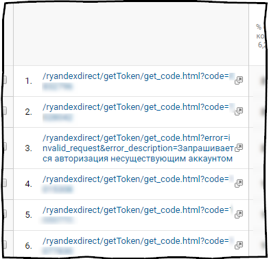
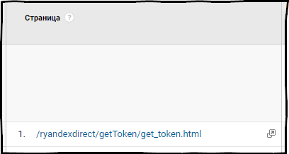
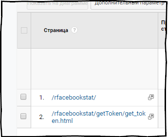
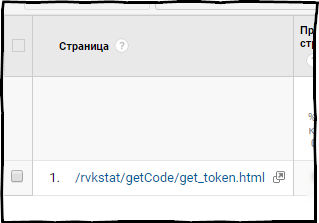
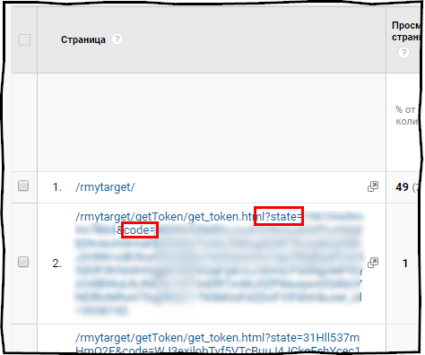
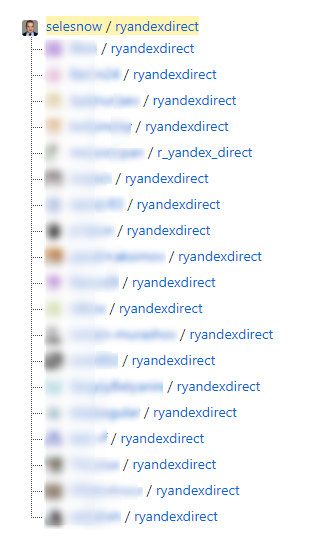
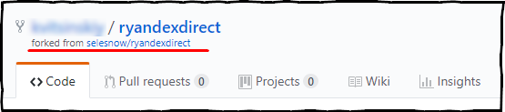

Насколько безопасно использовать R пакеты для работы с API рекламных систем
Последнее время мне довольно часто стали задавать вопрос о том, насколько безопасно использовать различные готовые расширения, т.е. пакеты, написанные для языка R, есть ли вероятность того, что рекламный аккаунт попадёт в чужие руки
В этой статье я подробно расскажу о том, как устроен механизм авторизации внутри большинства пакетов и API интерфейсов рекламных сервисов, и о том, как использовать приведённые в статье пакеты максимально безопасно.
Информация данной статьи технически возможно не самая простая, поэтому, что бы текст был не таким сухим и техническим, как обычная справка я осмелюсь примерить на себя роль экскурсовода, и проведу вас по материалам этой статьи, для наиболее простого её восприятия.
Статья была написана и впервые опубликована на Хабре (habr.com).
Наш экскурсионный автобус уже прибыл, занимайте места поудобней и ознакомьтесь с нашим сегодняшним маршрутом.
Содержание
- Как устроен процесс авторизации в большинстве современных рекламных сервисов
- Откуда возник вопрос безопасности
- Чем вам грозит перехват токена
- Что делать если кто то завладел вашим токеном
- Как наиболее безопасно использовать R пакеты для работы с API рекламных систем
5.1. ryandexdirect и rym — Пакеты для работы с API Яндекс. Директ и Яндекс.Метрики
5.2. rfacebookstat- Пакеты для работы с рекламным кабинетом Facebook
5.3. rvkstat — Пакеты для работы с рекламным кабинетом Вконтакте
5.4. rmytarget — Пакеты для работы с рекламным кабинетом MyTarget - Заключение
Как устроен процесс авторизации в большинстве современных рекламных сервисов
Место сбора нашей экскурсионной группы — протокол OAuth.
Практически все сервисы, с API которых мне приходилось работать осуществляют авторизацию по протоколу OAuth 2.0, более подробно о нём уже неоднократно писали на хабре, кому интересно прогуляться в его дебри то пожалуйста, у вас есть такая возможность, сделать это можно тут и тут.
Если в двух словах объяснить его смысл, то OAuth позволяет приложению (в нашем случае таким приложением будет R пакет), которому вы предоставили разрешение, выполнять некоторые действие от вашего имени, при этом не требуется передавать этому приложению ваш логин и пароль от рекламного аккаунта, опять же в целях безопасности.
Вместо логина и пароля в протоколе OAuth используются токен, это сгенерированная строка состоящая из набора букв и цифр, которая в зашифрованном виде хранит информацию:
- От имени какого пользователя приложение выполняет запрос
- Действительно ли пользователь разрешил этому приложению доступ к своим данным
- Есть ли у самого пользователя нужные полномочия для работы с теми рекламными материалами, к которым он обращается
Для процесса авторизации и работы с API обычно вам необходимо зарегистрировать приложение в API. Далее это приложение должно получить подтверждение от команды поддержки API той или иной рекламной системы, т.е. автор изначально подробно описывает то, как и зачем он будет использовать API, всё это проверяется, модерируется, и только если у поддержки на стороне рекламной платформы нет вопросов о безопасности автор пакета получит доступ к API, и с помощью его зарегистрированного приложения вы, через готовый пакет, сможете проходить аутентификацию используя ID и secret выданные этому приложению.
Откуда возник вопрос безопасности
Мы с вами двигаемся дальше, давайте попробуем разобраться от куда возник вопрос безопасности при использовании пакетов?
Вообще вопрос безопасности доступа к рекламным кабинетам более чем обоснован, поскольку в рекламных кабинетах есть деньги, и зачастую достаточно не маленькие, поэтому безопасность рекламных аккаунтов является значительно более серьёзным вопросом нежели безопасность доступа, например к обычному пользовательскому профилю в социальных сетях.
Дело в том, что в большинстве случаев, при прохождении авторизации, R перенаправляет пользователей пакетов в браузер, изначально для подтверждения доступа к аккаунту, на этом этапе вы находитесь на странице сервиса с API которого собираетесь работать. После подтверждения пользователь перенаправляется на страницу, где ему будет сгенерирован токен, либо код подтверждения авторизации который впоследствии необходимо ввести в консоль R.
Так вот большинство пользователей беспокоятся потому, что сайты, где генерируется сам токен или код подтверждения авторизации, являются сторонними и ни имеют к самому рекламному сервису никакого отношения, естественно на них установлен либо счётчик Google Analytics, либо счётчик Яндекс. Метрики, и владелец сайта, который в большинстве случаев является и автором пакета, по мнению многих через этот сайт может завладеть их токенами, и получить через них доступ к управлению их рекламными материалами.
Чем вам грозит перехват токена
Давайте поговорим о том, что вообще позволяет делать токен если он попал в руки злоумышленника.
Токен надо хранить так же как и все остальные данные которые необходимы для доступа к аккаунту, т.е. если токен попадёт ни в те руки, то тот кто им завладел сможет управлять вашими рекламными материалами: удалять их, изменять, например вполне можно будет поменять текст объявления и ссылку на которую оно ведёт.
Хорошая новость это то, что как я уже писал выше протокол OAuth позволяет вам дать возможность управлять вашими рекламными материалами не предоставляя логин и пароль от своего аккаунта, т.е. даже если кто то завладел вашим токеном то угнать ваш аккаунт он с его помощью не сможет. Ни один API не позволяет запрашивать, и тем более менять ваш пароль, так что аккаунт у вас не заберут, а вот рекламировать свой сайт через ваш аккаунт — это запросто.
Что делать если кто то завладел вашим токеном
Если уж так получилось, что вы случайно передали свой токен, не стоит паниковать. На самом деле это не конец света, в большинстве случаев есть ряд действий которые сбрасывают выданные ранее токены, например в этом разделе справки API Яндекс.Директ подробно описан процесс отзывов выданных ранее токенов.
В большинстве случаев, независимо от того с API какой рекламной системы вы работаете достаточно будет просто поменять пароль к вашему аккаунту.
Как наиболее безопасно использовать R пакеты для работы с API рекламных систем
А теперь мы подобрались к самой интересней части нашей экскурсии, далее я расскажу о том, как наиболее безопасно использовать разработанные мной пакеты, поскольку с ними, и API систем с которыми они работают я хорошо знаком.
Хочу отметить, что все выданные токены хранятся на стороне рекламной платформы, а не приложения, через которое работает R пакет, поэтому доступа к самим токена нет даже у пользователя зарегистрировавшего приложения для работы с API рекламной площадки.
ryandexdirect и rym — Пакеты для работы с API Яндекс. Директ и Яндекс. Метрики
Оба пакета используют OAuth сервис Яндекса, подробнее ознакомится с ним можно по этой ссылке.
В пакете ryandexdirect для авторизации есть 2 функци:
yadirAuth— двухэтапная авторизацияyadirGetToken— запрос авторизационного токена
При использовании функции yadirAuth, а именно её я рекомедную использовать при работе с ryandexdirect, процесс авторизации идёт по описанной тут схеме, единственным уязвимым местом в данном случае является период от момента генерация кода подтверждения до ввода его в консоль R.
Объясню почему, вот как отображаются в Google Analytics данные о посещении страницы генерации кода подтверждения.

Т.е. код идёт после знака ‘?’, и считается GET параметром, который фиксирует счётчик Google Analytics, но срок жизни такого кода подтверждения заканчивается сразу после его использования, т.е. сразу после того, как вы ввели его в консоль R. Максимальный срок жизни такого кода — 10 минут.
Вторая функция yadirGetToken, осуществляет авторизацию по другой, описанной тут схеме. И при её использовании никакой код подтверждения не генерируется, т.е. после того, как вы дали пакету разрешение на доступ к данным вы попадаете на страницу генерации токена. Сам токен в URL возвращается после знака ‘#’, это не get параметр, а якорь, или как ещё называют эту часть URL — хеш. Браузер не передаёт эти данные, соответственно они не передаются дальше в отчёты Google Analytics, т.е. посещение этой страницы в отчётах отображаются вот так:

В этом втором случае рисков никаких нет, но минус использования функции yadirGetToken заключается в том, что она не сохраняет учётные данные в файл на вашем ПК, и далее соответственно не может использовать эти данные между разными R сессиями, а это не особо удобно. Токен полученный с его помощью вы будете хранить, и использовать в скриптах как текстовую строку, срок жизни такого токена 1 год, после чего пакет не сможет автоматически его заменить, как это происходит при использовании функции yadirGetAuth.
В пакет rym для авторизации существует фукция rym_auth, которая является полным аналогом функции yadirAuth, схема работы которой подробно я уже описал.
rfacebookstat — Пакеты для работы с рекламным кабинетом Facebook
О том, как устроен процесс аутентификации в Facebook Marketing API подробно описано тут.
Для прохождения авторизации в пакете rfacebookstat есть функция fbGetToken, работает она так же как и описанная ранее функция yadirGetToken из пакета ryandexdirect, т.е. всё реализуется через одноэтапную аутентификацию. Никакой опасности в том, что ваш токен будет перехвачен через отчёты Google Analytics нет, скрин того, как в Google Analytics выглядит посещение страницы генерации токена.

rvkstat — Пакеты для работы с рекламным кабинетом Вконтакте
Процесс аутентификации Вконтакте описан в справке по работе с API.
В rvkstat для авторизации можно использовать одну из двух функций:
vkAuth— Авторизация по схеме Authorization code flow, т.е. двухэтапная авторизация.vkGetToken— Авторизация по схеме Implicit flow, одноэтапная авторизация, с привязкой токена к устройству.
vkAuth осуществляет двухэтапную аутентификацию, по сути аналог описанной в начале этого блока функции yadirAuth, но только для авторизации в API Вконтакте, а не Яндекса.
Особенность работы с API Вконтакте в данном случае заключается в том, что зарегистрировать своё приложение и получить доступ к API там достаточно просто, не требуется заполнения форм в которых вы должны подробно описать как и зачем вы будете использовать API. Так вот, поскольку вы используете при работе с rvkstat своё приложение, то даже перехват кода подтверждения ничего не даёт, т.к. он привязан к вашему приложению, и для того, чтобы с его помощью перехватить токен необходимо знать id и secret вашего приложения, сам по себе код, не позволит получить за вас токен.
Функция vkGetToken позволяет получить токен наиболее быстрым способом, к тому же полученный токен привязан к устройству с которого он был запрошен, т.е. даже если его кто либо получит то использовать может только с того же ПК с которого он был запрошен. При этом в URL при генерации токен стоит после знака ‘#’, и как я уже говорил ранее, в отчёты Google Analytics не попадает.

rmytarget — Пакеты для работы с рекламным кабинетом MyTarget
На данный момент в API MyTarget существует 3 схемы авторизации, подробно о каждой можно узнать в документации.
Для авторизации в API MyTarget в rmytarget предназначена функция myTarAuth, по умолчанию она использует схему авторизации Authorization Code Grant, которая позволяет вам работать с API MyTarget избежав процесса получения персонального доступа к его использованию. Т.е. я уже зарегистрировал приложение, оно было одобрено поддержкой API MyTarget, и вы предоставляете ему доступ на работу с аккаунтом от вашего имени.
Authorization Code Grant — это двухэтапная схема авторизации, по смыслу схожа на ту которую реализует функция yadirAuth в пакете ryandexdirect.
Работает она следующим образом:
- Вы запускаете функцию, после чего открывается браузер.
- На странице сервиса MyTarget вы даёте разрешение на доступ к вашему аккаунту.
- Вас редиректит на страницу пакета, где генерируется код подтверждения. Максимальное время жизни этого кода – 1 час, но оно прекращается сразу после того, как вы с его помощью получили токен.
- Скопированный код подтверждения вы вводите в консоль R и получаете токен для работы с API.
При этом код подтверждения является get параметром и фиксируется в отчётах Google Analytics.

Но, если внимательно посмотреть то помимо кода (get параметр code), в URL присутствует ещё один параметр — state. Это строка, тоже токен, который генерируется самим пакетом rmytarget и отправляется в браузер сразу после запуска функции, этот параметр уникальный, и код подтверждения авторизации привязывается к нему. Даже если перехватить и код подтверждения и state токен всё равно воспользоваться этой комбинацией нельзя т.к. во первых ввести state токен некуда, и как я уже писал он уникален, и даже если бы и было куда его ввести повторно отправить его нельзя. Поэтому эта схема авторизации полностью безопасна.
Но если вам всё таки такой вариант по прежнему кажется подозрительным то rmytarget и функция myTarAuth позволяет использовать и оставшиеся две схемы авторизации:
- Client Credentials Grant, используется для работы с данными собственного аккаунта через API
- Agency Client Credentials Grant, используется для работы с данными собственных клиентов агентств\менеджеров.
В данном случае вам придётся самостоятельно получать доступ к API MyTarget, на данный момент его могут получить только юридические лица, и выдаётся он в ручном режиме, для запроса доступа вам необходимо использовать форму обратной связи, о всех подробностях вы можете узнать вот тут.
Итак, если всё таки вам удалось зарегистрировать своё приложения для работы с API MyTarget вы вполне можете с помощью функции myTarAuth пройти аутентификацию по одной из двух, перечисленных выше схем, для этого в аргумент code_grant передайте значение FALSE, и используйте следующие аргументы:
- grant_type — Тип вашего аккаунта, в данном случае обычный клиентский аккаунт, принимает значения “client_credentials” или “agency_client_credentials”.
- agency_client_name — Логин клиента из агентского аккаунта, используется только если grant_type = “agency_client_credentials”.
- client_id — ID выдаётся вам при подтверждение доступа к API MyTarget.
- client_secret — Выдаётся вам при подтверждение доступа к API MyTarget вместе с Client ID.
Пример кода для авторизации по схеме Client Credentials Grant
Пример кода для авторизации по схеме Agency Client Credentials Grant
В случае использования этого подхода, аутентификация будет проходит вообще без взаимодействия с сайтом пакета rmytarget.
Заключение
На этом наша экскурсия заканчивается, поскольку на сегодняшний день уже более 10000 пакетов опубликовано в основном репозитории — CRAN, и более 80000 на GitHub, в заключении хочу сказать ещё несколько слов о безопасности их использования.
В первую очередь обратите внимание есть ли нужный вам пакет на CRAN, поскольку это официальное хранилище для языка R, пакеты до того, как будут там опубликованы проходят достаточно жесткую модерацию командой специалистов этого репозитория. И пакет там не будет опубликован до тех пор пока он не будет полностью соответствовать политике CRAN. Поэтому если пакет присутствует на CRAN то можете быть уверены в том, что его использование для вас безопасно.
К тому же хочу отметить, что код всех пакетов для языка R является открытым, вы всегда можете предварительно посмотреть код любой его функции перед её запуском.
Так же попробуйте найти статьи о применении этого пакета, пользователи R довольно охотно делятся информацией, и вы наверняка найдёте кейсы применения более-менее популярных пакетов. Если о пакете пишут значит его используют, и по всей видимости проблем с ним ни у кого не возникло.
Также посмотрите кто является автором пакета, сделать это можно двумя способами:
- После установки пакета выполнить команду
utils::packageDescription("название_пакета")$Author - Посмотреть в исходнике пакета файл DESCRIPTION.
Попробуйте найти некоторую информацию об авторе во всемирной сети, если человек хотя бы мало-мальски публичный то вряд ли будет рисковать своей репутацией для того, чтобы получить токен доступа к вашему рекламному аккаунту и вашим рекламным материалам. Зачастую репутация дороже полученных сомнительным путём денег.
Если ставите пакет из GitHub то устанавливайте его именно из репозитория автора, а не какого либо ответвления, как правило у популярных репозиториев таких ответвлений достаточно много:

Дело в том, что ответвления не обновляются автором пакета, а значит вы не получите его наиболее актуальную версию. И к тому же пользователь GitHub который создал ветку, сам может вносить изменения в её код, доверять таким изменениям или нет решать вам.
Увидеть из какого репозитория было создано его ответвление можно на его странице на GitHub.

Никому, ни при каких обстоятельствах не передавайте ваши токены, храните их так же, как храните пароли от аккаунтов, даже если вам требуется показать пример кода, делайте это без указания токенов.
Помните, в подавляющем большинстве случаев использование R пакетов является совершенно безопасным для вас, надеюсь этой статьёй мне удалось вас в этом убедить, и рассказать о том, как устроен процесс авторизации в API наиболее популярных рекламных платформ.
Успехов вам, будьте бдительны но не поддавайтесь паранойе.